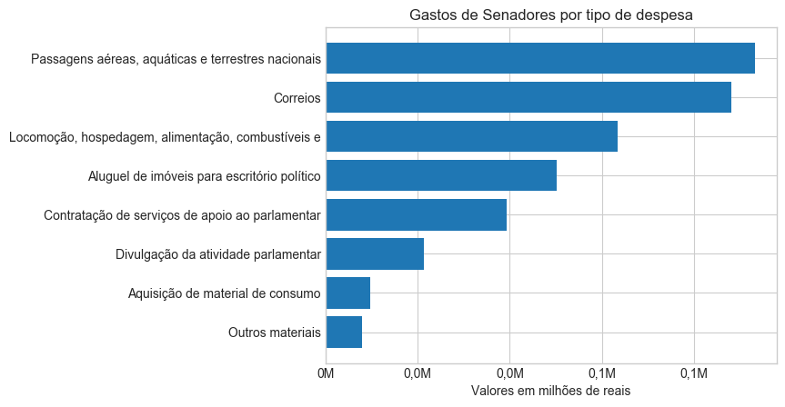
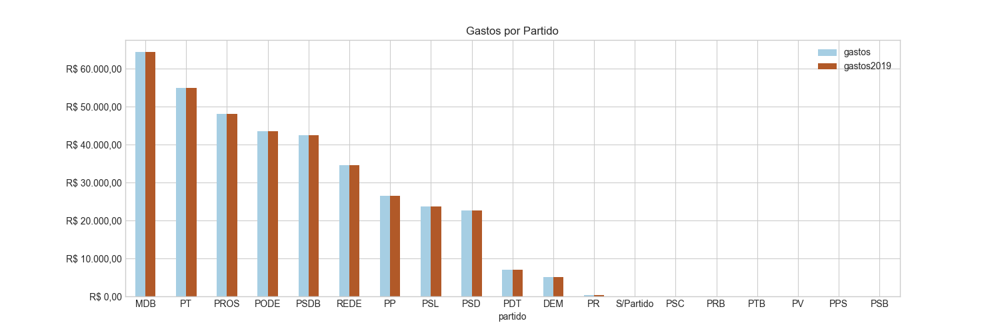
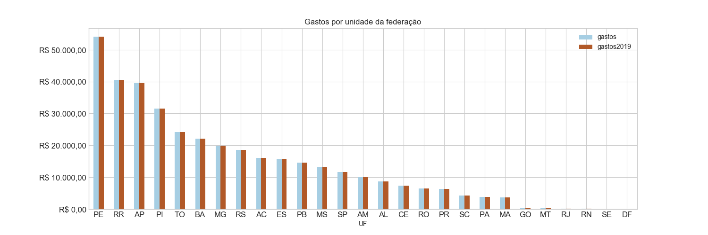

BRASIL - 56ª Legislatura
Informações de despesas de senadores
Dados coletados em
06/02/2019 às
14:45:45



 podem ser reordenadas com um clique. As despesas de um senador são detalhadas quando se passa o mouse sobre o montante.
podem ser reordenadas com um clique. As despesas de um senador são detalhadas quando se passa o mouse sobre o montante.| Nº | Foto | Nome |
Despesas no Mandato |
Participação |
UF |
Partido |
Escritório e Gabinete |
Benefício Moradia |
|---|---|---|---|---|---|---|---|---|
| 1 | Acir Gurgacz | R$ 6.140,46 | Titular | RO | PDT | 45 pessoas | 0 meses | |
| 2 | Alessandro Vieira | R$ 0,00 | Titular | SE | PPS | 3 pessoas | 0 meses | |
| 3 | Alvaro Dias | R$ 6.051,68 | Titular | PR | PODE | 30 pessoas | 0 meses | |
| 4 | Angelo Coronel | R$ 0,00 | Titular | BA | PSD | 16 pessoas | 0 meses | |
| 5 | Antonio Anastasia | R$ 11.474,10 | Titular | MG | PSDB | 20 pessoas | 1 mês | |
| 6 | Crédito foto: A definir | Arolde de Oliveira | R$ 0,00 | Titular | RJ | PSD | 20 pessoas | 0 meses |
| 7 | Crédito foto: A definir | Carlos Viana | R$ 0,00 | Titular | MG | PSD | 13 pessoas | 0 meses |
| 8 | Crédito foto: A definir | Chico Rodrigues | R$ 0,00 | Titular | RR | DEM | 14 pessoas | 0 meses |
| 9 | Crédito foto: A definir | Cid Gomes | R$ 0,00 | Titular | CE | PDT | 5 pessoas | 0 meses |
| 10 | Crédito foto: Cléber Medeiros/Supres | Ciro Nogueira | R$ 6.572,44 | Titular | PI | PP | 42 pessoas | 1 mês |
| 11 | Crédito foto: A definir | Confúcio Moura | R$ 0,00 | Titular | RO | MDB | 15 pessoas | 0 meses |
| 12 | Daniella Ribeiro | R$ 0,00 | Titular | PB | PP | 1 pessoas | 0 meses | |
| 13 | Dário Berger | R$ 0,00 | Titular | SC | MDB | 16 pessoas | 1 mês | |
| 14 | Davi Alcolumbre | R$ 4.782,58 | Titular | AP | DEM | 41 pessoas | 0 meses | |
| 15 | Crédito foto: Beto Oliveira/Supres | Eduardo Braga | R$ 6.442,85 | Titular | AM | MDB | 30 pessoas | 1 mês |
| 16 | Crédito foto: A definir | Eduardo Girão | R$ 0,00 | Titular | CE | PODE | 12 pessoas | 0 meses |
| 17 | Crédito foto: A definir | Eduardo Gomes | R$ 0,00 | Titular | TO | MDB | 9 pessoas | 0 meses |
| 18 | Eliziane Gama | R$ 0,00 | Titular | MA | PPS | 7 pessoas | 0 meses | |
| 19 | Crédito foto: Senado Federal | Elmano Férrer | R$ 21.015,79 | Titular | PI | PODE | 58 pessoas | 1 mês |
| 20 | Esperidião Amin | R$ 0,00 | Titular | SC | PP | 8 pessoas | 0 meses | |
| 21 | Crédito foto: A definir | Fabiano Contarato | R$ 0,00 | Titular | ES | REDE | 13 pessoas | 0 meses |
| 22 | Crédito foto: Senado Federal | Fernando Bezerra Coelho | R$ 10.219,72 | Titular | PE | MDB | 31 pessoas | 0 meses |
| 23 | Fernando Collor | R$ 7.263,29 | Titular | AL | PROS | 53 pessoas | 1 mês | |
| 24 | Flávio Arns | R$ 0,00 | Titular | PR | REDE | 12 pessoas | 0 meses | |
| 25 | Crédito foto: A definir | Flávio Bolsonaro | R$ 0,00 | Titular | RJ | PSL | 16 pessoas | 0 meses |
| 26 | Humberto Costa | R$ 10.332,22 | Titular | PE | PT | 37 pessoas | 1 mês | |
| 27 | Crédito foto: A definir | Irajá | R$ 0,00 | Titular | TO | PSD | 15 pessoas | 0 meses |
| 28 | Crédito foto: A definir | Izalci Lucas | R$ 0,00 | Titular | DF | PSDB | 10 pessoas | 0 meses |
| 29 | Jader Barbalho | R$ 3.373,37 | Titular | PA | MDB | 31 pessoas | 1 mês | |
| 30 | Crédito foto: A definir | Jaques Wagner | R$ 0,00 | Titular | BA | PT | 12 pessoas | 0 meses |
| 31 | Jarbas Vasconcelos | R$ 0,00 | Titular | PE | MDB | 20 pessoas | 0 meses | |
| 32 | Jayme Campos | R$ 0,00 | Titular | MT | DEM | 10 pessoas | 0 meses | |
| 33 | Jean Paul Prates | R$ 0,00 | 1º Suplente | RN | PT | 26 pessoas | 0 meses | |
| 34 | Crédito foto: A definir | Jorge Kajuru | R$ 0,00 | Titular | GO | PSB | 18 pessoas | 0 meses |
| 35 | Crédito foto: A definir | Jorginho Mello | R$ 0,00 | Titular | SC | PR | 22 pessoas | 0 meses |
| 36 | José Maranhão | R$ 3.711,99 | Titular | PB | MDB | 29 pessoas | 1 mês | |
| 37 | José Serra | R$ 11.458,33 | Titular | SP | PSDB | 19 pessoas | 1 mês | |
| 38 | Kátia Abreu | R$ 544,34 | Titular | TO | PDT | 35 pessoas | 1 mês | |
| 39 | Lasier Martins | R$ 72,76 | Titular | RS | PODE | 20 pessoas | 1 mês | |
| 40 | Crédito foto: A definir | Leila Barros | R$ 0,00 | Titular | DF | PSB | 16 pessoas | 0 meses |
| 41 | Crédito foto: A definir | Lucas Barreto | R$ 0,00 | Titular | AP | PSD | 3 pessoas | 0 meses |
| 42 | Crédito foto: A definir | Luis Carlos Heinze | R$ 0,00 | Titular | RS | PP | 12 pessoas | 0 meses |
| 43 | Luiz Carlos do Carmo | R$ 0,00 | 1º Suplente | GO | MDB | 32 pessoas | 0 meses | |
| 44 | Crédito foto: A definir | Mailza Gomes | R$ 15.118,21 | 1º Suplente | AC | PP | 27 pessoas | 1 mês |
| 45 | Crédito foto: A definir | Major Olimpio | R$ 0,00 | Titular | SP | PSL | 18 pessoas | 0 meses |
| 46 | Mara Gabrilli | R$ 0,00 | Titular | SP | PSDB | 26 pessoas | 0 meses | |
| 47 | Crédito foto: A definir | Marcelo Castro | R$ 0,00 | Titular | PI | MDB | 14 pessoas | 0 meses |
| 48 | Crédito foto: A definir | Marcio Bittar | R$ 0,00 | Titular | AC | MDB | 19 pessoas | 0 meses |
| 49 | Crédito foto: A definir | Marcos do Val | R$ 0,00 | Titular | ES | PPS | 23 pessoas | 0 meses |
| 50 | Crédito foto: A definir | Marcos Rogério | R$ 0,00 | Titular | RO | DEM | 12 pessoas | 0 meses |
| 51 | Maria do Carmo Alves | R$ 0,00 | Titular | SE | DEM | 39 pessoas | 0 meses | |
| 52 | Crédito foto: A definir | Mecias de Jesus | R$ 0,00 | Titular | RR | PRB | 23 pessoas | 0 meses |
| 53 | Crédito foto: A definir | Nelsinho Trad | R$ 0,00 | Titular | MS | PSD | 10 pessoas | 0 meses |
| 54 | Crédito foto: Senado Federal | Omar Aziz | R$ 190,47 | Titular | AM | PSD | 36 pessoas | 1 mês |
| 55 | Crédito foto: A definir | Oriovisto Guimarães | R$ 0,00 | Titular | PR | PODE | 12 pessoas | 0 meses |
| 56 | Otto Alencar | R$ 20.396,64 | Titular | BA | PSD | 30 pessoas | 1 mês | |
| 57 | Paulo Paim | R$ 18.246,30 | Titular | RS | PT | 40 pessoas | 0 meses | |
| 58 | Paulo Rocha | R$ 127,82 | Titular | PA | PT | 44 pessoas | 1 mês | |
| 59 | Crédito foto: A definir | Plínio Valério | R$ 0,00 | Titular | AM | PSDB | 30 pessoas | 0 meses |
| 60 | Randolfe Rodrigues | R$ 2.857,28 | Titular | AP | REDE | 46 pessoas | 1 mês | |
| 61 | Reguffe | R$ 0,00 | Titular | DF | S/Partido | 9 pessoas | 0 meses | |
| 62 | Renan Calheiros | R$ 478,77 | Titular | AL | MDB | 44 pessoas | 1 mês | |
| 63 | Roberto Rocha | R$ 3.460,85 | Titular | MA | PSDB | 48 pessoas | 1 mês | |
| 64 | Crédito foto: A definir | Rodrigo Cunha | R$ 0,00 | Titular | AL | PSDB | 12 pessoas | 0 meses |
| 65 | Rodrigo Pacheco | R$ 0,00 | Titular | MG | DEM | 7 pessoas | 0 meses | |
| 66 | Crédito foto: A definir | Rogério Carvalho | R$ 0,00 | Titular | SE | PT | 26 pessoas | 0 meses |
| 67 | Romário | R$ 0,00 | Titular | RJ | PODE | 31 pessoas | 0 meses | |
| 68 | Rose de Freitas | R$ 15.453,68 | Titular | ES | PODE | 31 pessoas | 0 meses | |
| 69 | Crédito foto: A definir | Selma Arruda | R$ 0,00 | Titular | MT | PSL | 18 pessoas | 0 meses |
| 70 | Sérgio Petecão | R$ 0,00 | Titular | AC | PSD | 38 pessoas | 1 mês | |
| 71 | Simone Tebet | R$ 636,08 | Titular | MS | MDB | 21 pessoas | 1 mês | |
| 72 | Crédito foto: A definir | Soraya Thronicke | R$ 0,00 | Titular | MS | PSL | 19 pessoas | 0 meses |
| 73 | Crédito foto: A definir | Styvenson Valentim | R$ 0,00 | Titular | RN | PODE | 7 pessoas | 0 meses |
| 74 | Tasso Jereissati | R$ 6.636,58 | Titular | CE | PSDB | 17 pessoas | 1 mês | |
| 75 | Telmário Mota | R$ 32.732,87 | Titular | RR | PROS | 49 pessoas | 1 mês | |
| 76 | Vanderlan Cardoso | R$ 0,00 | Titular | GO | PP | 5 pessoas | 0 meses | |
| 77 | Crédito foto: A definir | Veneziano Vital do Rêgo | R$ 0,00 | Titular | PB | PSB | 12 pessoas | 0 meses |
| 78 | Wellington Fagundes | R$ 78,26 | Titular | MT | PR | 37 pessoas | 0 meses | |
| 79 | Crédito foto: A definir | Weverton | R$ 0,00 | Titular | MA | PDT | 3 pessoas | 0 meses |
| 80 | Crédito foto: A definir | Zenaide Maia | R$ 0,00 | Titular | RN | PROS | 10 pessoas | 0 meses |
| 81 | Crédito foto: A definir | Zequinha Marinho | R$ 0,00 | Titular | PA | PSC | 16 pessoas | 0 meses |
| Nº | Foto | Nome |
Despesas no Mandato |
Participação |
UF |
Partido |
Escritório e Gabinete |
Benefício Moradia |
|---|---|---|---|---|---|---|---|---|
| 1 | Donizeti Nogueira | R$ 0,00 | 1º Suplente | TO | PT | 0 pessoas | 0 meses | |
| 2 | Fátima Bezerra | R$ 0,00 | Titular | RN | PT | 0 pessoas | 0 meses | |
| 3 | Gilberto Piselo | R$ 0,00 | 1º Suplente | RO | PDT | 0 pessoas | 0 meses | |
| 4 | Gladson Cameli | R$ 0,00 | Titular | AC | PP | 0 pessoas | 0 meses | |
| 5 | Guaracy Silveira | R$ 13.753,13 | 2º Suplente | TO | PSL | 0 pessoas | 1 mês | |
| 6 | Crédito foto: Nenhum | José Amauri | R$ 0,00 | 1º Suplente | PI | PODE | 0 pessoas | 0 meses |
| 7 | José Aníbal | R$ 0,00 | 1º Suplente | SP | PSDB | 0 pessoas | 0 meses | |
| 8 | Crédito foto: Senado Federal | Pastor Valadares | R$ 0,00 | 2º Suplente | RO | PDT | 0 pessoas | 0 meses |
| 9 | Crédito foto: Jefferson Rudy/Agência Senado | Pinto Itamaraty | R$ 0,00 | 1º Suplente | MA | PSDB | 0 pessoas | 0 meses |
| 10 | Ricardo Franco | R$ 0,00 | 1º Suplente | SE | DEM | 0 pessoas | 0 meses | |
| 11 | Ronaldo Caiado | R$ 0,00 | Titular | GO | DEM | 0 pessoas | 0 meses | |
| 12 | Crédito foto: A definir | Rudson Leite | R$ 0,00 | 2º Suplente | RR | PV | 0 pessoas | 0 meses |
| 13 | Crédito foto: Edilson Rodrigues/Agência Senado | Thieres Pinto | R$ 0,00 | 1º Suplente | RR | PTB | 0 pessoas | 0 meses |
| 14 | Virginio de Carvalho | R$ 0,00 | 2º Suplente | SE | PSC | 0 pessoas | 0 meses |